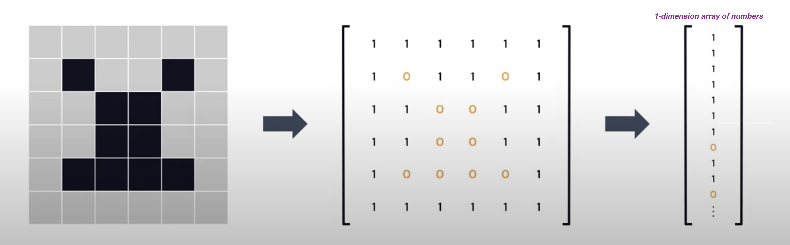
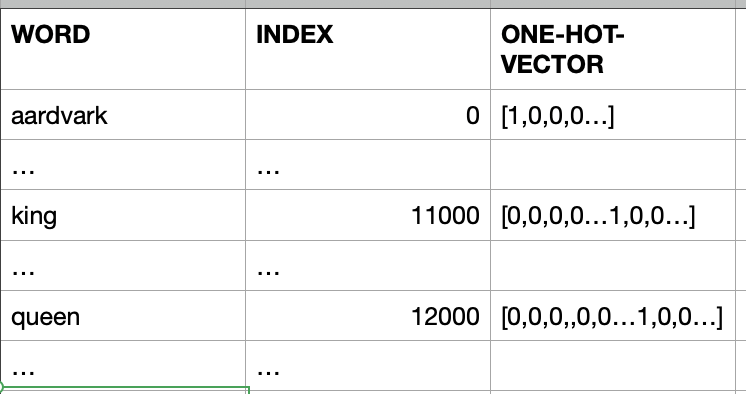
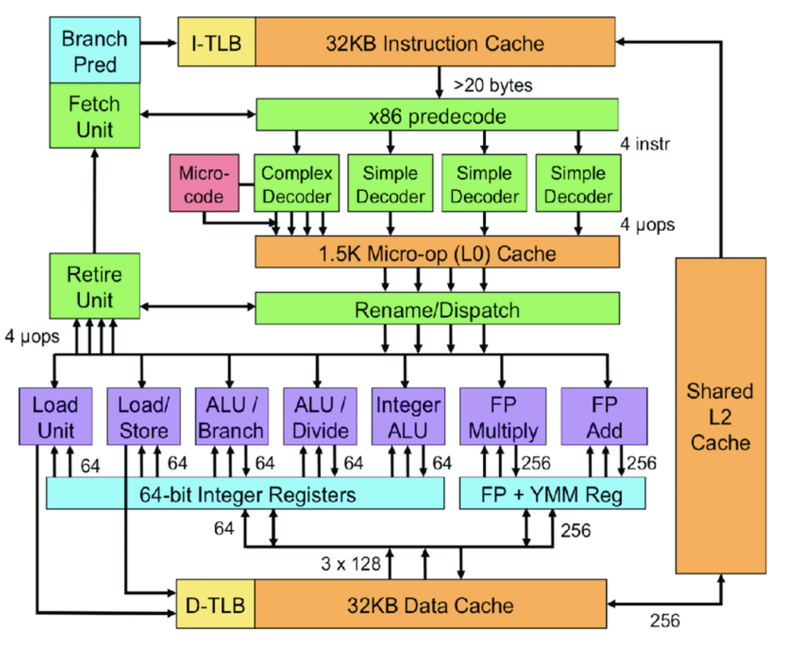
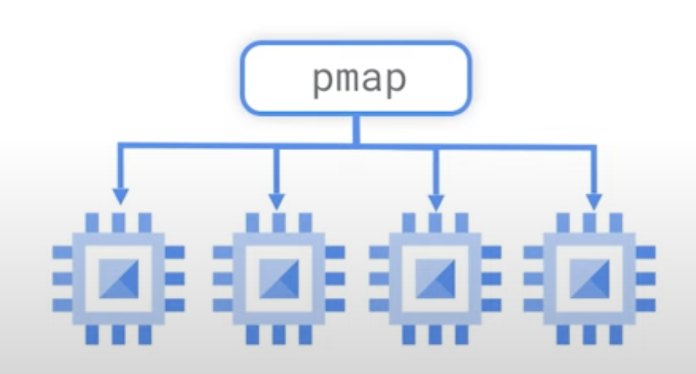
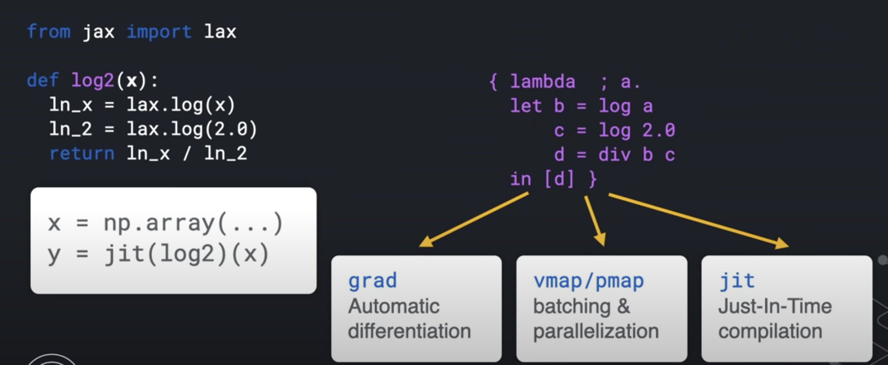

Chapter 1 : Quick Introduction
- In traditional programming we start with data and rules to apply on the data to get answers. This style of programming can't bring answers for problems predicting a type of cat in the cat picture.
As shown in the demo below, user provides a image of the cat, the application predicts type of the cat in that image with a confidence (probability) with help of Machine Learning.

To build this kind of solution using traditional programming, we may have to write too many rules or sometimes this problem is not easily solvable by our traditional programming. Here comes our hero Machine Learning to our rescue us!
What is special about Machine Learning ?
How long it will take to write the code for Solving Rubik’s Cube with a single Robot Hand using our traditional programming?
Chapter 2 - Basic Linear Algebra needed for ML
As we know computer are comfortable in dealing with numbers and perform fast operations on those numbers to provide us the results we are interested in. But in our real world we deal with things like words, sentences and images. This creates an impedance mismatch. So obvious solution will be to solve this mismatch is by representing our things in numbers, let us call this as Data Representations.
Linear Algebra what we learned in our high school math class comes to save us here!
In this chapter, we will have a friendly introduction to Linear Algebra.
If you did not have a chance to learn Linear Algebra in your high school, do not worry, I will try to explain in a simplest possible way to understand the Data Representations concepts so we can do Machine Learning work.
"Simplicity is the ultimate sophistication" - Leonardo da Vinci
Let us use Vectors for Data Representations
Ok, what is a Vector?
- Vector is one Dimensional Array of numbers
- It has magnitude (value) and direction

- Example vector with 3 entries
v1 = [1, 2, 3]
When we say n-dimensional vector space we mean this space consists of all vector with n entries. In our vector with 3 entries, 3-dimensional vector space will consist of all the vectors with 3 entries.
Another name vector space is feature, let me explain that in few moments...
How you can draw a point 3D space
from mpl_toolkits import mplot3d
import numpy as np
import matplotlib.pyplot as plt
# width by height here are 10 inches by 10 inches
fig = plt.figure(figsize=(10,10))
# 3d projection
# with position (pos) of subplot as num-of-rows:1, num-of-cols:1, index-of-subplot:1
# If no positional arguments are passed, defaults to (1, 1, 1).
ax = fig.add_subplot(111, projection='3d')
# plot a point
ax.scatter(2,3,4)
plt.show()

What is a feature Vector?
Entries of the feature vectors represent features of the thing (object) this vector is used to represent.
Example: Assume the thing (object) has 3 features: Color, Heaviness and Shape:
- Color = 2
- say number 1 means it is Red
- say number 2 means it is Green
- say number 3 means it is Blue
- Heaviness : 2
- say number 1 means it is light
- say number 2 means it is medium
- say number 3 means it is heavy
- say number 4 means it is super heavy
- Shape : 1
- say number 1 means it is circle
- say number 2 means it is rectangle
- say number 3 means it is square
- say number 4 means it is cube
So this object with Color: Green, Heaviness: medium and Shape: circle is represented (Data Representation) by this feature vector whose entries are:
fv = [2,2,1]
Another example:
The object here is a Patient with:
- height: 64 inches,
- weight: 131 pounds,
- age: 23 years
The patient vector p:
p = [64, 131, 23]

Now we understand how we can provide Data Representation using Feature Vectors.
The Object I have is an Image, how to do the Data Representations for this?
- Black and White Images
- Black: 0
- White: 1
- Gray: 0 to 255

Now we have words in say English dictionary, how to do the Data Representations for these words
-
Naive way:
- words are discrete and independent tokens
- Build Dictionary or tokens
['aardvark', ... 'king', ..., 'queen', ...]- Since we need to convert words to numbers as part of our Data Representations, we can assign numbers to these words
[0, ... 11000, ... 12000, ...]We will find out these large number are not well suited for ML. We can solve this by using a concept called one-hot-vector
[ [1,0,0,0,...], ... [0,0,0,0…1,0,0…], ... [0,0,0,,0,0…1,0,0…] ] ]These vectors have same dimensionality as the number-of-words in the dictionary.
Suppose the English has 100,000 word, the dimension of the one-hot-vector for each word will be 100,000. In that one-hot-vector only one entry in this vector will be 1 and all other entries will be 0.

Disadvantages with one-hot-vector way of Data Representation
- Very high dimensionality
- Do not capture any world knowledge (like: Gender, Part-of-Speech...) about the words
- example: king and queen are more in common with each other than aardvark
- all of these token have 90 degrees angles between them
- example: king and queen are more in common with each other than aardvark
- Let us take a dictionary with only these 3 words
['aardvark', 'king', 'queen']
-
These 3 words in vectors in above 3-dimensional space
-
They are unit vectors aligned to axes
-
We need to find a way the words to occupy the entire this 3-dimensional space instead of perfectly aligning to the axes.
-
More useful Data Representation of words will be continuous vectors in the n-dimensional space
- This will allow aardvark, king and queen to flow anywhere in this 3-dimensional space. So their representations will be real-values like 0.3, 1.9, -0.4 for aardvark

-
Representing world knowledge (like: Gender, Part-of-Speech...)
-
For example for queen [0.1, -0.3, 1.2, -0.4, 0.02, 1.1, -0.25, ... ]
- First 3 entires can represent the aspect of Gender for example
- Next 3 entires can represent the aspect of Part-of-speech for example
-
This mechanism will help us to express relationships between the words as equal to relative vector distance

- For example, for Gender Dimension, king and queen should be far part as man and woman
- In case of Part-of-speech dimensions, all these words should clustered together at a distance zero, since all of them are nouns
- play (verb) and playful (adjective) should be at the same distance as joy and joyful
How we can learn useful embedding (Data Representations)?
-
Wikipedia comes to rescue us here! It is a reliable source of information we can use to learn the useful embeddings:
- has 28 billion words
- 309 languages
-
If we look at the king and queen in Wikipedia, both them have lot of commonality
- They reference each other, includes common words like monarch
- So Wikipedia has word knowledge we can extract to learn the useful embedding for us
-
Wikipedia is freeform text
- Common practice
- Unsupervised text data ---> supervised task
- we can ask the ML model to fill in the gaps and predict the next word as shown below:
- Common practice
King is the title given to male ______ monarch : 70% body : 20% dog: 10%- The ML model could produce a probability distribution over the word in the vocabulary indicating which ones are more likely to follow the word given so far, in our case it is monarch
2.1. References
3. ML Models
Simple model
\( y = mx + b \)
where
m = slope (gradient)
b = y-intercept
x is the independent variable
y is the dependent variable depends on m and b
Plotting the equation
\( y = x*2 + 1 \)
import matplotlib.pyplot as plt
import numpy as np
# setup the plot size 10 inches by 10 inches
fig = plt.figure(figsize=(10,10))
# 1 row, 1 col, and index is 1
ax = fig.add_subplot(111)
# put grid in the plot
plt.grid()
# let us generate x values start from -5 to 5 with 100 samples
x = np.linspace(-5,5,100)
print ('Number of samples = {}' .format(len(x)))
ax.spines['left'].set_position('center')
ax.spines['bottom'].set_position('center')
ax.spines['right'].set_color('none')
ax.spines['top'].set_color('none')
# we need ticks at bottom and left
ax.xaxis.set_ticks_position('bottom')
ax.yaxis.set_ticks_position('left')
## our plot function
def plot_eqn(eqn, color, label):
plt.plot(x, eqn, color, label=label)
# put legend at upper left cornor
plt.legend(loc='upper left')
plot_eqn( x*2 + 1, '-r', 'eqn for x*2 + 1')
#plot_eqn( x*2 - 1, '-b', 'eqn for x*2 - 1')
#plot_eqn( x*2 - 3, ':b', 'eqn for x*2 - 3')
#plot_eqn( x*2 + 3, '--m', 'eqn for x*2 + 3')
## show our plot
plt.show()
What happens when we train a ML model for this equation?
- We provide a training dataset with values for x and y
| x | y |
|---|---|
| 2 | 5 |
| 1 | 3 |
| 7 | 15 |
| ... | ... |
- During the training ML Model calculates the optimum value for m and b variables based on the training dataset we have provided
- Once training completed, ML model is ready for predicting value for y for the given x
You: Hey, model my x value is 2, can you predict the value of y?
Model: Sure, it is 5
4. Deep Learning
Neural Network
Gradient descent
Back Propagation
Calculus
5. Tensorflow
TensorFlow.js
TensorFlow.js (TFJS) is a library for machine learning in JavaScript. Using TFJS you can develop ML models in JavaScript, and use ML directly in the browser or in Node.js.
Browser
<script src="https://cdn.jsdelivr.net/npm/@tensorflow/tfjs@2.0.0/dist/tf.min.js"></script>
Node.js
# install TensorFlow.js. using npm or yarn
yarn add @tensorflow/tfjs
# Install TensorFlow.js with native C++ bindings.
yarn add @tensorflow/tfjs-node
# if your system has a NVIDIA® GPU with CUDA support, use the GPU package even for higher performance.
yarn add @tensorflow/tfjs-node-gpu
const tf = require('@tensorflow/tfjs');
// Optional Load the binding:
// Use '@tensorflow/tfjs-node-gpu' if running with GPU.
require('@tensorflow/tfjs-node');
// Train a simple model:
const model = tf.sequential();
model.add(tf.layers.dense({units: 100, activation: 'relu', inputShape: [10]}));
model.add(tf.layers.dense({units: 1, activation: 'linear'}));
model.compile({optimizer: 'sgd', loss: 'meanSquaredError'});
const xs = tf.randomNormal([100, 10]);
const ys = tf.randomNormal([100, 1]);
model.fit(xs, ys, {
epochs: 100,
callbacks: {
onEpochEnd: (epoch, log) => console.log(`Epoch ${epoch}: loss = ${log.loss}`)
}
});
6. PyTorch
7. Transformers
BERT
GPT
Generative Pre-trained Transformer (GPT)
T5
GitHub Copilot
When we type this:
function calculateDaysBetweenDates(date1, date2) {
Copilot will complete this function:
function calculateDaysBetweenDates(date1, date2) {
// following lines are written by copilot
var oneDay = 24 * 60 * 60 * 1000;
var date1InMillis = date1.getTime();
var date2InMillis = date2.getTime();
var days = Math.round(Math.abs(date2InMillis - date1InMillis) / oneDay);
return days;
}
\( \int x dx = \frac{x^2}{2} + C \)
\( \int y dy = \frac{y^3}{5} \)
References
Transformers
- Illustrated Guide to Transformers Neural Network: A step by step explanation
- CS480/680 Lecture 19: Attention and Transformer Networks
- LSTM is dead. Long Live Transformers!
Open AI
Codex
- natural language to code
- Creating a Space Game with OpenAI Codex
- OpenAI Codex
Github Copilot
- Trained on billions of lines of public code
- Your AI pair programmer
- VS Code extension
Matplotlib
Matplotlib: Plot a Function y=f(x)
9. Salesforce Einstein
10. Google Cloud Platform
Dataflow
11. Processing Units
CPU
CPU is constructed from millions of transistors. It can have multiple processing cores and is commonly referred to as the brain of the computer. It is essential to all modern computing systems as it executes the commands and processes needed for your computer and operating system. The CPU is also important in determining how fast programs can run, from surfing the web to building spreadsheets.
The CPU is suited to a wide variety of workloads, especially those for which latency or per-core performance are important. A powerful execution engine, the CPU focuses its **smaller number of cores on individual tasks and on getting things done quickly. This makes it uniquely well equipped for jobs ranging from serial computing to running databases.
Intel's Sandy Bridge Architecture ( 32 nm micro architecture)

GPU
The GPU is a processor that is made up of many smaller and more specialized cores. By working together, these cores deliver massive performance when a processing task can be divided up and processed across these cores.
GPUs began as specialized ASICs - Application Specific Integrated Circuit developed to accelerate specific 3D rendering tasks.
Over time, these fixed-function engines became more programmable and more flexible. While graphics and the increasingly lifelike visuals of today’s top games remain their principal function, GPUs have evolved to become more general-purpose parallel processors as well, handling a growing range of applications.
Initially GPUs were solving computer graphics related problems in Gaming The General Purpose GPU (GPGPU) plays a vital role in the deep learning and parallel computing.

What is CUDA?
Compute Unified Device Architecture (CUDA) is is a parallel computing platform developed by NVIDIA. It enables software programs to perform calculations using both the CPU and GPU.
What about CPU?
CPU is constructed from millions of transistors. It can have multiple processing cores and is commonly referred to as the brain of the computer. It is essential to all modern computing systems as it executes the commands and processes needed for your computer and operating system. The CPU is also important in determining how fast programs can run, from surfing the web to building spreadsheets.
The CPU is suited to a wide variety of workloads, especially those for which latency or per-core performance are important. A powerful execution engine, the CPU focuses its **smaller number of cores on individual tasks and on getting things done quickly. This makes it uniquely well equipped for jobs ranging from serial computing to running databases.
TPU - Tensor Processing Units
TPUs are Google’s custom-developed application-specific integrated circuits (ASICs) used to accelerate machine learning workloads.
Designed from the ground up with the benefit of Google’s deep experience and leadership in machine learning.
Enable us to run our machine learning workloads on Google’s TPU accelerator hardware using TensorFlow
Designed for maximum performance and flexibility to help researchers, developers, and businesses to build TensorFlow compute clusters that can leverage CPUs, GPUs, and TPUs.
High-level TensorFlow APIs help us to get models running on the Cloud TPU hardware.
Advantages for using TPUs
-
Cloud TPU resources accelerate the performance of linear algebra computation, which is used heavily in machine learning applications.
-
TPUs minimize the time-to-accuracy when you train large, complex neural network models. Weeks to hours (150 times faster)
- Models that previously took weeks to train on other hardware platforms can converge in hours on TPUs.
TPU v3
A TPU v3 board contains four TPU chips and 32 GiB of HBM. Each TPU chip contains two cores. Each core has a MXU, a vector unit, and a scalar unit.

11. ML Pipelines
TensorFlow Serving
TensorFlow Extended
Apache Airflow
Airflow is a platform to programmatically author, schedule and monitor workflows.
Apache Beam
Apache Bean help us to implement batch and streaming data processing jobs that run on any execution engine.

Kubeflow
The Kubeflow project is dedicated to making deployments of machine learning (ML) workflows on Kubernetes simple, portable and scalable.

Kubernetes
Kubernetes is an open-source container-orchestration system for automating computer application
- deployment
- scaling
- management
It was originally designed by Google and is now maintained by the Cloud Native Computing Foundation.
References
AutoML
12. Speedup
In this chapter we will see the ways to speed up Machine Learning
12. JAX

JAX is a new library from Google Research. JAX can automatically differentiate native Python and Numpy functions.
- Loops
- Branches
- Recursion
- Closures
- Can take Derivative of Derivatives
- Supports reverse mode differentiation, also known as [Back Propagation] using Grad function
- Supports forward mode differentiation
XLA
XLA is Accelerated Linear Algebra.
-
It is a domain-specific compiler for linear algebra that can accelerate TensorFlow models with potentially no source code changes.
-
Performs optimizations like:
- Fusing operations together (something like consolidation) so the intermediate results do not have to written out the memory. Instead it get streamed into next operation.
- This enable faster and more efficient processing
This is some what crudely equal to nodejs stream: - Refer: TableauCRM CLI using this stream concept, where it loads data from a Oracle SQL Query results directly into Tableau CRM dataset - refer: sfdx mohanc:ea:dataset:loadFromOra
def model (x, y, z): return tf.reduce_sum( x + y * z)
JAX uses XLA to compile and run our Numpy program on GPUs and TPUs
JAX uses JIT (just-in-time) compile of custom functions into XLA optimized kernels using decorator @jit
@jit # jit decorator
def update(params, x, y):
grads = gard(loss)(params, x, y)
return [ (w - step_size * dw, b - step_size * db) for (w, b), (dw, db) in zip (params, grads)]
pmap
- JAX applies pmap (Parallel Map) replicating computations across multiple cores 
Autograd
Autograd (https://github.com/hips/autograd) can automatically differentiate native Python and Numpy code.
Functions available for the transformations
- grad
- jit
- pmap
- vmap - automatic vectorization
- allowing us to turn a function which can handle only one data point into a function which can handle batch of these data points of any size with just one wrapper function vmap
Sample - MNIST
import jax.numpy as jnp
from jax import grad, vmap, jit
def predict(params, inputs):
for W, b in params:
outputs = jnp.dot(inputs, W) + b
inputs = jnp.tanh(outputs)
return outputs
def loss (params, batch):
inputs, targets = batch
preds = predict(params, inputs)
return jnp.sum( (preds - targets) **2 ) # SME
gradient_fun = jit(grad(loss))
preexample_grads = vmap(grad(loss), in_axes=(None, 0))
Key Ideas
- Python code is traced into an Intermediate Representation (IR)
- IR can be transformed (automatic differentiation)
- IR enables domain-specific compilation (XLA - Accelerated Linear Algebra)
- Has very powerful transforms
- grad
- jit
- vmap
- pmap
- Python's dynamism makes this possible
- JAX makes use of this dynamism and evaluates a function's behavior by calling it on a tracer value
def sum(x):
return x + 2
class ShapedArray(object):
def __add__ (self, other):
self.record_computation("add", self, other)
return ShapedArray(self.shape, self.dtype) # dtype is like float32
sum( ShapedArray( (2,2), float32 ))

With this IR, JAX knows how to do the transforms like:
- grad
- jit
- vmap
- pmap


TF_CPP_MIN_LOG_LEVEL=0
import jax
import jax.numpy as jnp
global_list = []
def log2(x):
global_list.append(x)
ln_x = jnp.log(x)
ln_2 = jnp.log(2.0)
return ln_x / ln_2
print( jax.make_jaxpr(log2)(3.0) )
- Document
- Output
{ lambda ; a:f32[]. let
b:f32[] = log a
c:f32[] = log 2.0
d:f32[] = div b c
in (d,)
}
Jake on JAX
Closures and Decorators
Python Closures
Let us explain closure by an example:
# This is the outer enclosing function
def print_msg(msg):
def printer():
# This is the nested function
print(msg)
return printer # returns the nested function
# Now let's try calling this function.
another = print_msg("Hello")
another()
# Output: Hello
This technique by which some data in our case "Hello" gets attached to the code - another() is called closure in Python.
Three characteristics of a Python closure are:
- it is a nested function, in our example: printer()
- it has access to a free variable in outer scope, in our example: msg.
- it is returned from the enclosing function, in our example: print_msg()
``
# Python Decorators make an extensive use of closures
Python Decorators
A decorator takes in a function, adds some functionality and returns it.
# a decorator takes in a function, adds some functionality and returns it.
# takes in function to be decorated
def make_pretty(func):
def inner():
print("I got decorated") # getting decorated
func() # back to the given function
return inner
def ordinary():
print("I am ordinary")
# will print: I am ordinary
ordinary()
decorated = make_pretty(ordinary)
decorated()
""" will print:
I got decorated
I am ordinary
"""
# decorator function (make_pretty) has added
## some new functionality to the original function (ordinary)
# annoation way
@make_pretty # syntactic sugar
def ordinary():
print("I am ordinary")
iam_special = ordinary()
""" will print:
I got decorated
I am ordinary
"""
Decorating functions with parameters
# Decorating functions with parameters
def smart_divide(func):
def inner(a, b):
print("I am going to divide", a, "and", b)
if b == 0:
print("Whoops! cannot divide by zero")
return
return func(a, b)
return inner
@smart_divide
def divide(a, b):
print(a/b)
divide(10,2)
""" will print:
I am going to divide 10 and 2
5.0
"""
divide(10,0)
""" will print:
I am going to divide 10 and 0
Whoops! cannot divide by zero
"""
References
13. OpenAI
OpenAI API
Completion
curl https://api.openai.com/v1/engines/davinci/completions \
-H 'Content-Type: application/json' \
-H 'Authorization: Bearer YOUR_API_KEY \
-d '{
"prompt": "Once upon a time",
"max_tokens": 5
}'
- Result
{
"id": "cmpl-4DmYlIcNgBh26avH8t5mMMWwgILGE",
"object": "text_completion",
"created": 1639190275,
"model": "davinci:2020-05-03",
"choices": [
{
"text": ", there was a software",
"index": 0,
"logprobs": null,
"finish_reason": "length"
}
]
}
Search
curl https://api.openai.com/v1/engines/davinci/search \
-H "Content-Type: application/json" \
-H 'Authorization: Bearer YOUR_API_KEY' \
-d '{
"documents": ["White House", "hospital", "school"],
"query": "the president"
}'
{
"object": "list",
"data": [
{
"object": "search_result",
"document": 0,
"score": 215.56
},
{
"object": "search_result",
"document": 1,
"score": 55.614
},
{
"object": "search_result",
"document": 2,
"score": 40.932
}
],
"model": "davinci:2020-05-03"
}
Create Classification
curl https://api.openai.com/v1/classifications \
-X POST \
-H "Authorization: Bearer YOUR_API_KEY" \
-H 'Content-Type: application/json' \
-d '{
"examples": [
["A happy moment", "Positive"],
["I am sad.", "Negative"],
["I am feeling awesome", "Positive"]],
"query": "It is a raining day :(",
"search_model": "ada",
"model": "curie",
"labels":["Positive", "Negative", "Neutral"]
}'
{
"completion": "cmpl-4DmdStcV7tC6o5VJnoihr4TDFHse4",
"label": "Negative",
"model": "curie:2020-05-03",
"object": "classification",
"search_model": "ada",
"selected_examples": [
{
"document": 1,
"label": "Negative",
"text": "I am sad."
},
{
"document": 0,
"label": "Positive",
"text": "A happy moment"
},
{
"document": 2,
"label": "Positive",
"text": "I am feeling awesome"
}
]
}
Answers
curl https://api.openai.com/v1/answers \
-X POST \
-H "Authorization: Bearer YOUR_API_KEY" \
-H 'Content-Type: application/json' \
-d '{
"documents": ["Puppy A is happy.", "Puppy B is sad."],
"question": "which puppy is happy?",
"search_model": "ada",
"model": "curie",
"examples_context": "In 2017, U.S. life expectancy was 78.6 years.",
"examples": [["What is human life expectancy in the United States?","78 years."]],
"max_tokens": 5,
"stop": ["\n", "<|endoftext|>"]
}'
{
"answers": [
"puppy A."
],
"completion": "cmpl-4DmgSrZJ7sQx6lWRbaMyskSN68qCE",
"model": "curie:2020-05-03",
"object": "answer",
"search_model": "ada",
"selected_documents": [
{
"document": 0,
"text": "Puppy A is happy. "
},
{
"document": 1,
"text": "Puppy B is sad. "
}
]
}
List Files
curl https://api.openai.com/v1/files \
-H 'Authorization: Bearer YOUR_API_KEY'
{
"object": "list",
"data": []
}
Upload Files
curl https://api.openai.com/v1/files \
-H "Authorization: Bearer YOUR_API_KEY" \
-F purpose="answers" \
-F file='@puppy.jsonl'
Delete File
curl https://api.openai.com/v1/files/file-XjGxS3KTG0uNmNOK362iJua3 \
-X DELETE \
-H 'Authorization: Bearer YOUR_API_KEY'
Retrieve File Information
curl https://api.openai.com/v1/files/file-XjGxS3KTG0uNmNOK362iJua3 \
-H 'Authorization: Bearer YOUR_API_KEY'
Retrieve File Content
curl https://api.openai.com/v1/files/file-XjGxS3KTG0uNmNOK362iJua3/content \
-H 'Authorization: Bearer YOUR_API_KEY' > file.jsonl
Fine Tunes
- Manage fine-tuning jobs to tailor a model to your specific training data.
curl https://api.openai.com/v1/fine-tunes \
-X POST \
-H "Content-Type: application/json" \
-H "Authorization: Bearer YOUR_API_KEY" \
-d '{
"training_file": "file-XGinujblHPwGLSztz8cPS8XY"
}'
List fine-tunes
curl https://api.openai.com/v1/fine-tunes \
-H 'Authorization: Bearer YOUR_API_KEY'
List fine-tune information
curl https://api.openai.com/v1/fine-tunes/ftjob-AF1WoRqd3aJAHsqc9NY7iL8F \
-H "Authorization: Bearer YOUR_API_KEY"
Cancel a fine-tune
curl https://api.openai.com/v1/fine-tunes/ftjob-AF1WoRqd3aJAHsqc9NY7iL8F/cancel \
-X POST \
-H "Authorization: Bearer YOUR_API_KEY"
List fine-tune events
curl https://api.openai.com/v1/fine-tunes/ftjob-AF1WoRqd3aJAHsqc9NY7iL8F/events \
-H "Authorization: Bearer YOUR_API_KEY"
Embeddings
- Get a vector representation of a given input that can be easily consumed by machine learning models and algorithms.
curl https://api.openai.com/v1/engines/babbage-similarity/embeddings \
-X POST \
-H "Authorization: Bearer YOUR_API_KEY" \
-H "Content-Type: application/json" \
-d '{"input": "The food was delicious and the waiter..."}'
{
"object": "list",
"data": [
{
"object": "embedding",
"embedding": [
0.002866707742214203,
0.01886799931526184,
-0.03013569489121437,
-0.004034548997879028,
...
]
"index": 0
}
],
"model": "babbage-similarity-model:2021-09-20"
}